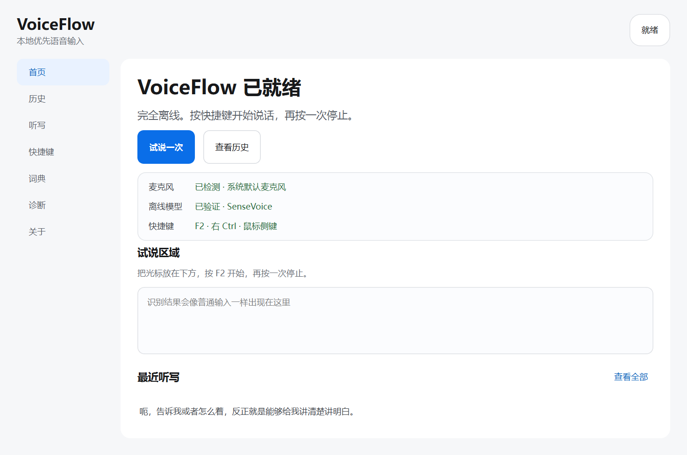

全程在本机
录音、识别、词典和历史默认不离开这台电脑，也不需要账户。
完全离线 · Windows
按 F2 开始说话，再按一次停止。VoiceFlow 在本机完成识别， 把文字送回你正在使用的输入框。
Windows 10 / 11 · x64 · 无需 Python · 安装后可离线使用
公开 Beta 当前未签名；Windows 可能显示信誉提示。请只从本页或 GitHub Releases 下载并核对 SHA256。


一个更安静的输入方式
VoiceFlow 把语音识别变成系统里的一层输入能力。它不接管你的工作， 只在你需要时出现，完成后立即退回托盘。
录音、识别、词典和历史默认不离开这台电脑，也不需要账户。
记事本、浏览器、文档或聊天窗口，不必把内容搬到另一个应用。
先写入剪贴板，再发送粘贴，同时保存在本地历史。
预览只负责反馈，停止后仍会补齐完整音频并输出最终结果。
三步完成一次听写
F2、右 Ctrl 或鼠标侧键都可以开始。
小胶囊只显示必要状态，不抢走当前焦点。
文字回到光标处，并保留在剪贴板和历史中。
隐私不是一个开关
默认 SenseVoice 模型随离线安装包提供。日常听写不会自动下载模型、 检查更新或调用云端服务。
阅读隐私与联网说明选择你的平台
当前公开目标是 Windows x64。macOS 需要独立完成权限、签名和公证，不会用未验证的包占位。
Windows
包含离线模型，安装后无需 Python。Beta 安装器约 314 MB；当前未签名。
macOS
全局输入、辅助功能权限、签名和 notarization 全部通过后才会开放。
开放源码，发布可验证